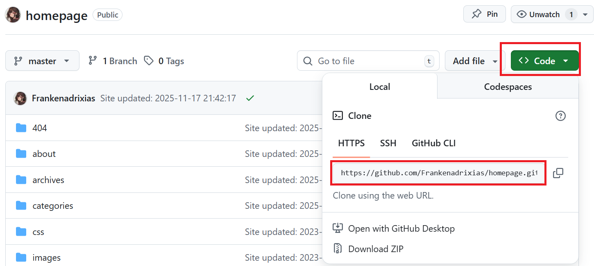

Git操作教程
整理一下GitHub的使用方式以及相关的Git工具操作教程。
git的安装与默认设置
设置默认用户信息，该命令只需要运行一次：
1 | $ git config --global user.name "your_name" |
从远程仓库克隆与更新
首先新建一个空文件夹作为要克隆的仓库目录，右键
git bash here ，配置基础数据：
1 | $ git init # 初始化git仓库 |
从2021年起，GitHub不再支持使用账户密码进行Git操作，需要使用个人访问令牌（Personal Access Token）或SSH密钥来替代。
输入以下命令生成SSH密钥，并在GitHub的设置中进行配置：
1 | $ ssh-keygen -t rsa -b 4096 -C "your_email@example.com" # 生成rsa密钥 |
密钥生成后，公钥的本机保存位置为
C:/user/user_name/.ssh/id_rsa.pub，测试是否能成功连接到 Git
平台：
1 | $ ssh -T git@github.com # 测试密钥是否配置成功 |
如果看到类似如下信息，说明配置成功：
1 | Hi username! You've successfully authenticated, but GitHub does not provide shell access. |
打开要克隆的远程仓库，在页面的Code选项中点击网址并复制（注意使用ssh方法同步需要点击ssh链接）

输入刚刚复制的网址，完成仓库克隆：
1 | $ git clone https://github.com/<user_name>/<repo_name>.git |
当需要更新代码时，首先拉取远程仓库内容：
1 | $ git pull |
代码编写完毕后，推送到远程仓库：
1 | $ git add # 将修改后的文件添加到本地仓库的暂存区（Index） |